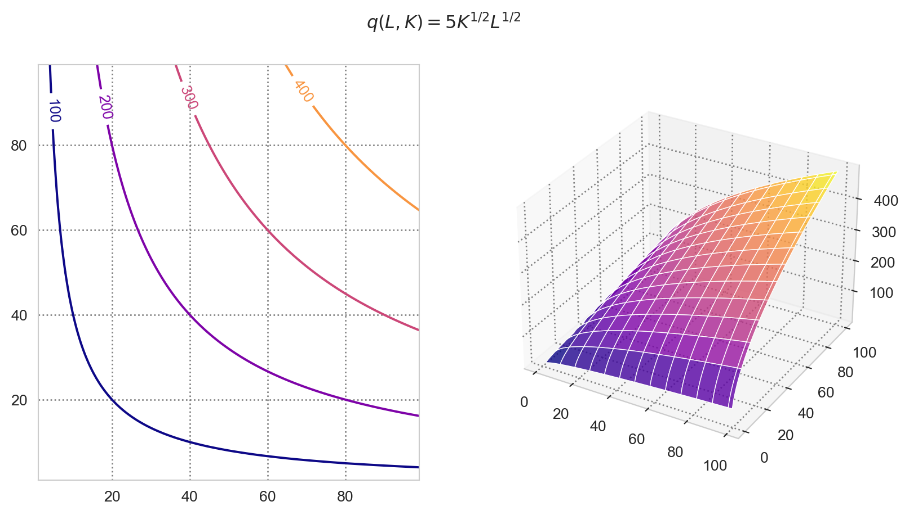
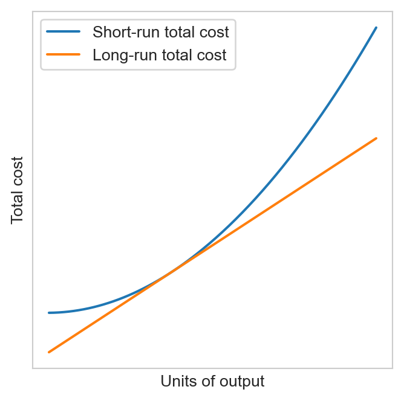
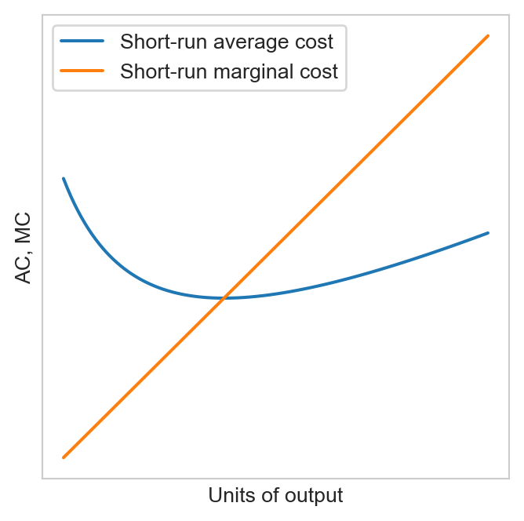

Chapter 2. Producers and supply
1 Production function
A production function describes how inputs (factors of production such as labor, capital and land, etc.) can be transformed into outputs. We denote the production function by \(f:\mathbb{R}^n\to\mathbb{R}_+\), where \(n\) is the number of inputs. In the case of two inputs, capital (\(K\)) and labor (\(L\)): \[ q = f(K, L), \] where \(q\) is the amount of output.
Example 1
Cobb-Douglas production function: \(q = AK^{\alpha}L^{\beta}\), where \(A>0\) and \(\alpha, \beta \in (0,1)\)
Leontief production function: \(q = A\min\{aK, bL\}\), where \(A, a, b>0.\) This production function captures the idea that inputs must be used in fixed proportion
Linear production function: \(q = aK + bL\) where \(a, b > 0.\) Here inputs are perfectly substitutable (e.g., robots vs human workers in the future)
Quasilinear production function: \(q = AK^a + bL\) where \(A, a, b>0.\) This production function could be used to capture different returns to scales of different inputs. For example scaling is quite straightforward for labor or raw materials but might be complex for capital and land.
The Cobb-Douglas, linear and fixed-proportion production functions are all special cases of the CES production function: \[ q = \left(aL^{\frac{s-1}{s}} + bK^{\frac{s-1}{s}}\right)^{\frac{s}{s-1}}, \tag{1}\]
where \(s\) is the EoS. Special cases:
- As \(s\to \infty\): CES \(\to\) linear production function
- As \(s \to 0\): CES \(\to\) fixed-proportion production function
- As \(s \to 1\): CES \(\to\) the Cobb-Douglas production function
Why is it called CES? Let \(q(L, K)\) be a twice differentiable production function of two inputs. The elasticity of substitution between the two factors measures the percentage in the ratio of the inputs in response to a percentage change in the MRTS. Mathematically:
\[ s = \frac{d\ln \left(\frac{K}{L}\right)}{d \ln MRTS_{L,K}}, \tag{2}\]
where \(MRTS_{L,K} = MP_L/MP_K\).
2 Average and marginal products
2.1 Average product and productivity
The average product is the total units of output produced per unit of input used
- The average product or productivity of labor, \(AP_L = q / L\)
- The average product or productivity of capital, \(AP_K = q / K\)
The higher is the average product, the higher is the productivity
Productivity typically depends on the production technology and the levels of input used
Example 2 For each of the following production functions, compute the average product of labor (or labor productivity). Determine if increasing labor improves productivity.
- \(q = 100 \sqrt{L}\)
- \(q = 5 L^{1/2} + 3L - 6\)
2.2 Marginal product
- The marginal product is the rate at which total output changes as the firm uses one additional unit of input
- The marginal product of labor: \(MP_L = \frac{\Delta q}{\Delta L}\) when \(L\) is discrete (e.g. number of workers) and \(MP_L = \frac{\partial q}{\partial L}\) when \(L\) is continuous (e.g. working hours)
- The marginal product of capital: \(MP_K = \frac{\Delta q}{\Delta K}\) when \(K\) is discrete and \(MP_K = \frac{\partial q}{\partial K}\) when \(K\) is continuous
- Example: Compute the marginal product of labor for the production functions in the previous example and determine if it is increasing or decreasing in the amount of input used.
2.3 Decreasing marginal products
2.4 Decreasing marginal products
2.5 Relationship beteen average and marginal products
Figure 3 suggests that the AP curve crosses the MP curve at its maximum. In particular, as the AP is increasing when it is less than the MP and it is decreasing when it is greater than the MP. This makes sense intuitively since the MP being greater than the AP means the added worker is more productive than the average worker in the existing team, and vice versa.
Let us formalize this observation. Consider the case of continuous labor input and differentiable production function. Let \(\bar{q}(L) = q(L) / L\) be the average product. Differentiating with respect to \(L\) yields:
\[ \begin{aligned} \bar{q}'(L) &= \frac{q'(L)L - q(L)}{L^2}, \quad L > 0. \\ \bar{q}'(L) \geq 0 &\iff q'(L)L - q(L) \geq 0 \\ &\iff q'(L) \geq \frac{q(L)}{L} \\ &\iff q'(L) \geq \bar{q}(L). \end{aligned} \tag{3}\]
3 Isoquants
3.1 Definition
In the first chapter, we saw that indifference curves are nothing but the level curves of the utility function that represents a consumer’s preference relation
- Each IC represents combinations of goods that give the consumer the same level of utility
Isoquants are to firms is a similar (but not identical) concept: Each isoquant represents all combinations of inputs that yield the same level of output
Key difference with ICs: the levels assocated with isoquants are cardinal: they represent actual outputs and not just fictive units invented to rank bundles
3.2 Example
Consider the production function \(q(K, L) = 5K^{1/2} L^{1/2}\). Find the isoquant corresponding to \(m > 0\) units of output.
\(m > 0\) implies that both inputs are strictly positive. We have: \[ 5K^{1/2} L^{1/2} = m \\ \iff K = \frac{m^2}{25L}. \]

3.3 Marginal rate of technical substitution (MRTS)
3.3.1 Definition
The MRTS is the slope of the isoquant (in absolute value):
\[ \frac{-dK}{dL} = \frac{MP_L}{MP_K} \equiv MRTS_{L,K}. \tag{4}\]
It tells us for every unit reduction in capital, how many units of labor the firm needs to increase to maintain the same level of output. Or conversely, how many units of capital the firm is willing to give up to hire an additional worker without hurting its output
As in the case of MRS, we derive the MRTS by totally differentiating along an isoquant, where \(q(L, K) = m\) for some constant \(m>0\):
\[ \begin{aligned} dq(L, K) &= 0 \\ \iff q_L dL + q_K dK &= 0 \\ \iff \frac{-dK}{dL} &= \frac{q_L}{q_K} \\ &= \frac{MP_L}{MP_K} \equiv MRTS_{L,K}. \end{aligned} \tag{5}\]
3.3.2 Properties
In the case of Cobb-Douglas production function above, the MRTS is decreasing as we move in the south-east direction along one isoquant:
When capital is abundant, the firm is willing to give up many units of capital to hire an additional worker
When capital is scarce, firm is less willing to replace it with workers
4 Homogeneity and returns to scale
4.1 Returns to scale
Let \(\alpha > 0\) be the factor by which all inputs change (i.e., each input is multiplied by \(\alpha\))
Suppose \(q(\alpha K, \alpha L) = \alpha^k q(K, L)\) for some number \(k\)
- If \(k > 1\): the firm exhibits increasing returns to scale (IRS)
- If \(k = 1\): the firm exhibits constant returns to scale (CRS)
- If \(k < 1\): the firm exhibits decreasing returns to scale (DRS)
Note that the characterization holds regardless of whether \(\alpha\) is greater or smaller than one. If \(\alpha \in (0, 1)\) then increasing returns to scale means that as we reduce inputs by a factor of \(\alpha\), the firm’s output falls by more than \(\alpha\).
Example 3 Consider the Cobb-Douglas production function \(q = AK^a L^b\) where \(A, a, b\) are strictly positive constants. For which values of \(a, b\) does this function exhibit increasing, constant or decreasing returns to scale? What kind of returns to scale do linear and fixed-proportion production functions exhibit?
Answer
- Cobb-Douglass:
For some \(\alpha > 0\), we have: \[ \begin{aligned} q(\alpha L, \alpha K) &= A \alpha^{a+b} K^a L^b \\ &= \alpha^{a+b} q(L, K). \end{aligned} \tag{6}\]
Hence the nature of returns to scale depends on \(a+b\). In particular:
- IRS if \(a+b > 1\)
- DRS if \(a+b < 1\)
- CRS if \(a+b = 1\)
- Linear and fixed-proportion production functions both exhibit CRS
5 Technological progress
5.1 Definition
Technical advances that allow firms to produce more with the same amount of inputs
Three types of technical progress:
- Labor enhancing: MPL increases by more than MPK
- Capital enhancing: MPK increases by more than MPL
- Neutral: MPL and MPK increase by the same amount (in percentage terms)
Suppose the firm has production function \(q = A_1 L^a K^b\). After a technical progress, it has one of the following PFs.
- \(q = A_1 L^{a + \delta} K^b\) with \(\delta > 0\)
- \(q = A_1 L^a K^{b + \delta}\) with \(\delta > 0\)
- \(q = A_2 L^a K^b\) with \(A_2 > A_1\)
Let us determine the type of progress that the firm has undergone.
5.2 Types of technological progress
The percentage change in the marginal product of each input: \[ \frac{MP'_i - MP_i}{MP_i} = \frac{MP'_i}{MP_i} - 1, \quad i\in\{K, L\}, \] where \(MP'_i\) denotes the marginal product of input \(i\) after the technological progress
Observe that: \[ \frac{MP'_L - MP_L}{MP_L} \geq \frac{MP'_K - MP_K}{MP_K} \\ % \iff \frac{MP'_L}{MP_L} \geq \frac{MP'_K}{MP_K} \\ % \iff \frac{MP'_L}{MP'_K} \geq \frac{MP_L}{MP_K} \\ \iff MRTS'_{L,K} \geq MRTS_{L,K}. \]
Hence the type of the tech progress can be determined by comparing the MRTSs
5.3 Labor-enhancing technological progress
Consider \(q = A_1 L^{a + \delta} K^b\) with \(\delta > 0\)
The MRTS before tech progress: \[MRTS_{L,K} = \frac{a}{b}\frac{K}{L}.\]
After tech progress: \[MRTS'_{L,K} = \frac{a+\delta}{b}\frac{K}{L}.\]
Since \(\delta > 0\), we have \(MRTS'_{L,K} > MRTS_{L,K}\), implying that this is a labor-enhancing (or labor-saving) tech progress
Graphically, on the \((K, L)\) plane, the isoquants become steeper
5.4 Capital-enhancing technological progress
Consider \(q = A_1 L^a K^{b + \delta}\) with \(\delta > 0\)
The MRTS before tech progress: \[MRTS_{L,K} = \frac{a}{b}\frac{K}{L}.\]
After tech progress: \[MRTS'_{L,K} = \frac{a}{b+\delta}\frac{K}{L}.\]
Since \(\delta > 0\), we have \(MRTS'_{L,K} < MRTS_{L,K}\), which is equivalent to \(MRTS'_{K,L} > MRTS_{K,L}\), implying that this is a capital-enhancing (capital-saving) tech progress
How do the isoquants change graphically?
5.5 Neutral technological progress
Finally, consider \(q = A_2 L^a K^b\) with \(A_2 > A_1\)
In this case the \(MRTS\) does not change after the progress, implying that this is a neutral one
Graphically the isoquants do not change
6 Cost functions
6.1 Isocost lines
Definition 1 (Isocost) An isocost line is the set of input combinations that yield the same total cost (TC) for the firm. Mathematically, let \(w>0\) and \(r>0\) be the prices of labor and capital, respectively. Then the isocost consists of all \((w, r)\) pairs such that: \[ TC = wL + rK. \tag{7}\]
Observe that the slope of the isocost line is \(-w/r\), implying that as \(w\) rises, this line gets steeper.
6.2 Cost minimization problem (CMP)
The cost minimization problem entails finding a combination of inputs such that the total cost to attain a certain level of output is minimized.
Definition 2 (CMP) \[ \begin{aligned} &\min_{L,K} C = wL + rK \\ &\text{s.t. } q(L, K) \geq m, \end{aligned} \tag{8}\] where \(m\) is the target output level.
The idea is to identify the isocost line touching the isoquant that is as close to the origin as possible.
6.2.1 Necessary conditions
Set up the Lagrangian:
\[ \mathcal{L}(\lambda, L, K) = - C(L, K) + \lambda (q(L,K) - m). \tag{9}\]
KTT theorem: If \((L^*, K^*)\) is a solution to the CMP, then there exist \(\lambda^* \geq 0\) such that:
\[ \begin{aligned} &\mathcal{L}_L (L^*, K^*, \lambda^*) \leq 0, \quad \mathcal{L}_K (L^*, K^*, \lambda^*) \leq 0\\ &\quad \quad \quad \text{ with equality for interior solutions }\\ &\lambda^* \geq 0, \quad \lambda^*(q(L^*, K^*) - m) = 0. \end{aligned} \tag{10}\]
Assuming interior solutions, the FOCs yield: \[ \begin{aligned} \lambda^* q_L(L^*, K^*) &= w, \\ \lambda^* q_K(L^*, K^*) &= r. \end{aligned} \tag{11}\]
This implies: \[ \frac{MP_L}{MP_K} = \frac{w}{r} \\ \iff \frac{MP_L}{w} = \frac{MP_K}{r}=\frac{1}{\lambda^*}. \tag{12}\]
Again \(\lambda^*\) can be interpreted as a shadow price: the cost of increasing output by a unit: \[\lambda^* = \frac{\partial C^*(r,w,m)}{\partial m}.\]
Equation 12 states that when minimizing the production cost, the firm rearranges inputs in such manner that the marginal product per currency unit is equalized across all factors (sounds familiar?)
- If for example \(\frac{MP_L}{w} > \frac{MP_K}{r}\) then we should increase \(L\) by reducing \(K\) since the former has greater bang for the buck
The condition \(\frac{MP_L}{MP_K} = \frac{w}{r} \iff MRTS_{L,K} = \frac{w}{r}\) tells us that the interior optimum is located where the isoquant is tangent to the isocost
Note that in general we should also check corner solutions (one or both of the inputs being null) or incorporate these constraints directly into the Langrangian (i.e. to add \(\lambda_K K + \lambda_L L\))
6.3 Comparative statics
Solutions to the CMP give us input demands, which typically depend on input prices and the target output, i.e., on \(w, r\) and \(m\).
This allows us to perform comparative statics
The cost is the expenditure that a firm incurs when hiring the optimal amounts of inputs
As with input demands, we can express the (optimal) cost function as a function of input prices and target output
\[ C(w, r, m) = wL(w, r, m) + rK(w, r, m). \tag{13}\]
Likewise, we can also perform comparative statics on it
6.4 Types of costs:
6.4.1 Explicit vs implicit costs
Explicit costs: Costs that require monetary payments
Implicit costs: Do not require monetary outlays but reflect opportunity costs
Example: What is your cost of attending this course?
- Explicit cost: tuition, transportation, etc.
- Implicit cost: the salary you could have earned during the time of study
6.4.2 Sunk vs nonsunk costs
- Sunk costs: costs that cannot be recoverred even if the firm chooses to shut down its operations.
- Example: The rental the firm has already paid for the building if the lease does not allow subletting
- This means that there is a fixed positive cost that the firm incurs even in the case of no production
- Nonsunk costs: costs that can be sold back (recoverable or partially recoverable costs) in case the firm shuts down
- Example: Raw materials
6.4.3 Long-run vs short-run costs
In the long run (LR), the firm has enough time to vary the amount of all inputs as much as necessary
In the short run (SR), the amount of at least one input is fixed
Example: In short run, production factors such as land or capital are typically fixed, whereas labor is variable. In the long run, it is possible to buy more land and set up new factories, allowing all factors of production to vary.
- Consider a firm with Cobb-Douglas production \(q = L^a K^b\) where \(K=\bar{K}>0\) is fixed in the SR. Thus the cost function found above is the LR cost. The SR cost can be found by solving the CMP with respect to \(L\) only

6.4.4 Average and marginal costs
Average cost (AC): total cost of production per output unit:
\[ AC(q) = \frac{C(q)}{q}, \tag{14}\] where \(C(q)\) is the total cost.
Marginal cost (MC): the rate at which the total cost increases as the firm produces an additional unit of output. Graphically it is the slope of the total cost curve:
\[ MC(q) = C'(q) \tag{15}\] in the continuous case.1
The MC curve crosses the AC curve at the AC’s minimum. In other words, the AC is decreasing when it is above the MC and increasing when it is above the MC.
Intuition:
- Initially when output is small, the variable cost is small and the fixed cost dominates the total cost
- As output increases, the importance of fixed cost declines. Meanwhile, the MC increases (due to decreasing marginal product)
- After a threshold, producing an additional unit costs more than the AC of existing units

7 Exercises
Exercise 1 For each of the following production functions, set up and solve the CMP.
- Cobb-Douglas production function: \(q(L,K) = L^a K^b\) where \(a, b>0\) and \(a+b=1\)
- Linear production function: \(q(L,K) = aL + bK\) where \(a, b>0\)
- Hint: Consider 3 cases: \(w/r = a/b\), \(w/r < a/b\) and \(w/r > a/b\)
Exercise 2 Consider again the Cobb-Douglas production function in Exercise 1. Let \(K(w, r, m)\) and \(L(w, r, m)\) denote the input demand for capital and labor, respectively.
- How do input demands change with the ouput level \(m\), and the input price?
- Are they homogeneous functions? If yes of which degree?
Exercise 3 Derive the cost function for a firm with a Cobb-Douglas production function. Is it a homogenous function? Of which degree? Explain.
Exercise 4 Let \(q = L^{1/2} K^{1/2}\) be the production function. Suppose that in the short run capital is fixed at \(\bar{K}=150\). Find the long-run and short-run cost functions. Which one is smaller? Does it make sense?
Exercise 5 Suppose \(w=\$40\) and \(r=\$10\). Derive the average and the marginal costs for the Cobb-Douglas production function \(q = L^{1/2} K^{1/2}\) in the SR and the LR.
Footnotes
It is equal to \(\Delta C / \Delta q\) in the discrete case↩︎